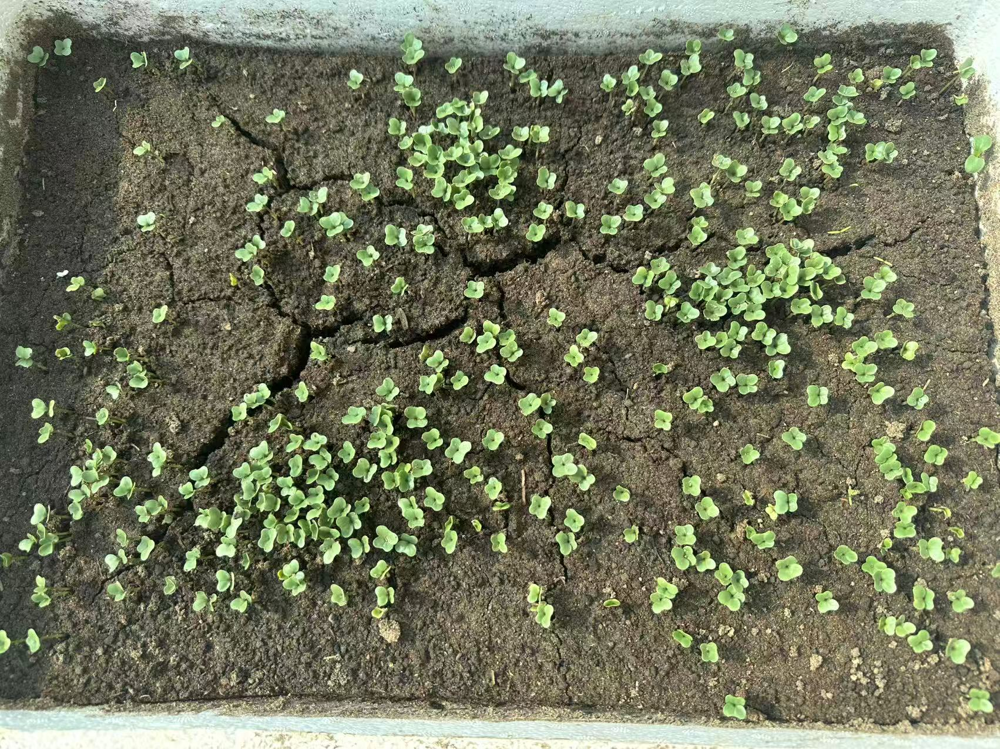
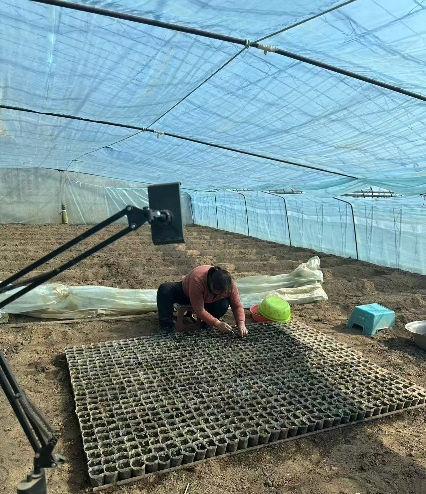
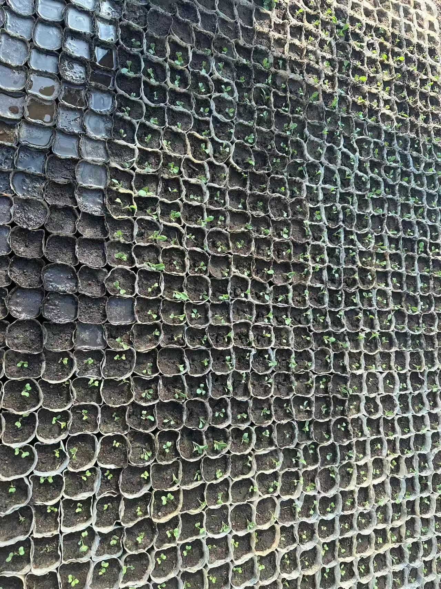
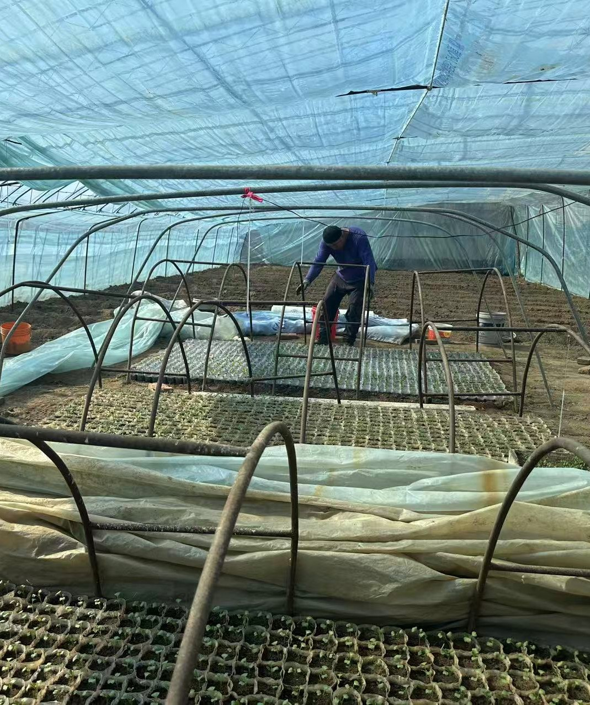

Farm Gallery | 农场图片

Greenhouse Cultivation | 温室种植
From Seed Selection to Fresh Market Supply
从种子选择到市场供应的一体化农业
Taizi Island Heritage Farm is a family-operated agricultural business located in Liaoyang, Liaoning, China. We specialize in greenhouse cultivation of tomatoes, cucumbers, and a variety of seasonal crops.
With over 30 years of farming experience, we manage the full agricultural process — from seed selection and seedling cultivation to greenhouse production, harvesting, and market distribution — ensuring stable supply and consistent product quality.
太子岛老农民农场位于中国辽宁辽阳，是一家家庭经营的农业企业，专注于温室番茄、黄瓜及多种季节性农产品的种植。
凭借30多年的种植经验，我们实现从种子选择、育苗培育、温室种植到采收及市场分销的全流程管理， 确保产品质量稳定、供应可靠。
We cultivate a variety of agricultural products throughout the year based on seasonal cycles.
Availability may vary depending on harvest periods.
我们根据季节轮作种植多种农产品，具体供应情况根据不同采收周期而变化。
Seasonal Supply | 季节性供应
Seasonal Supply
Seasonal Supply
Seasonal Supply
Seasonal Supply
Seasonal Supply
Seasonal Supply
Seasonal Supply
Seasonal Supply
Seasonal Supply
Seasonal Supply
Seasonal Supply
Seasonal Supply
Seasonal Supply
Seasonal Supply
Seasonal Supply
Seasonal Supply
Seasonal Supply
Limited Supply | 限量供应
Daily Supply | 日常供应
Available on Request | 按需供应
Our product prices are based on daily market conditions and follow the pricing of the Taizihe Morning Market. This ensures fair, transparent, and competitive pricing for all partners.
我们的产品价格根据市场行情每日浮动，并参考太子河早市价格， 确保价格公平透明，具有市场竞争力。
Agricultural product prices fluctuate based on seasonal supply, weather conditions, and market demand. Our pricing follows the Taizihe Morning Market to ensure alignment with real-time local wholesale trends.
农产品价格受季节、天气及市场供需影响而波动。我们的价格参考太子河早市， 与本地批发市场行情保持一致。
季节变化
天气影响
供需关系
市场行情
Standardized greenhouse techniques ensure strong root development, consistent growth, and high survival rates, providing a reliable foundation for high-quality crop production.
标准化温室种植技术可确保根系发达、生长一致、成活率高，为高品质农产品提供稳定保障。

Seeds to Sprouts
种子发芽

Transplanting
幼苗移栽

Early Growth
初期生长

Greenhouse Management
温室管理
Greenhouse Cultivation | 温室种植
Location: Liaoyang, Liaoning, China
辽宁省辽阳市太子岛农林牧渔基地
Contact Person: Xiuce Gu
Email: mgu.joy@gmail.com
Phone: +86 158 4191 8476
We welcome wholesalers and partners worldwide.
欢迎国内外批发商与合作伙伴。
Contact Now📍 View Exact Location on Google Maps
🌍 International Users → Google Map
🇨🇳 国内用户 → 百度地图
Our farm is located on Taizi Island with convenient access to regional markets and logistics routes.
农场位于太子岛，交通便利，便于市场运输与分销。